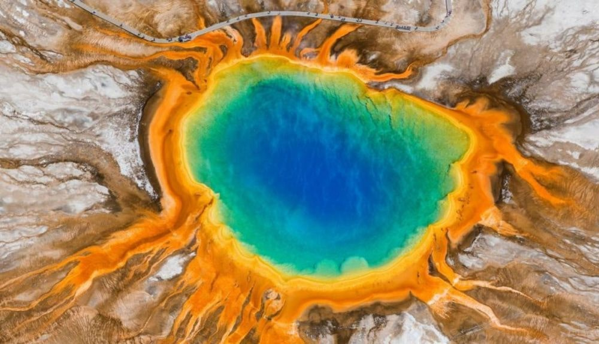
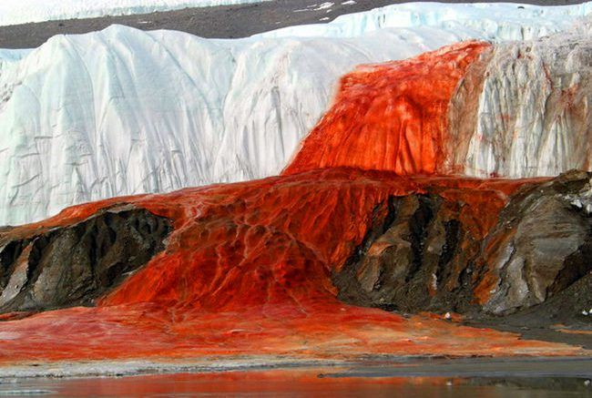
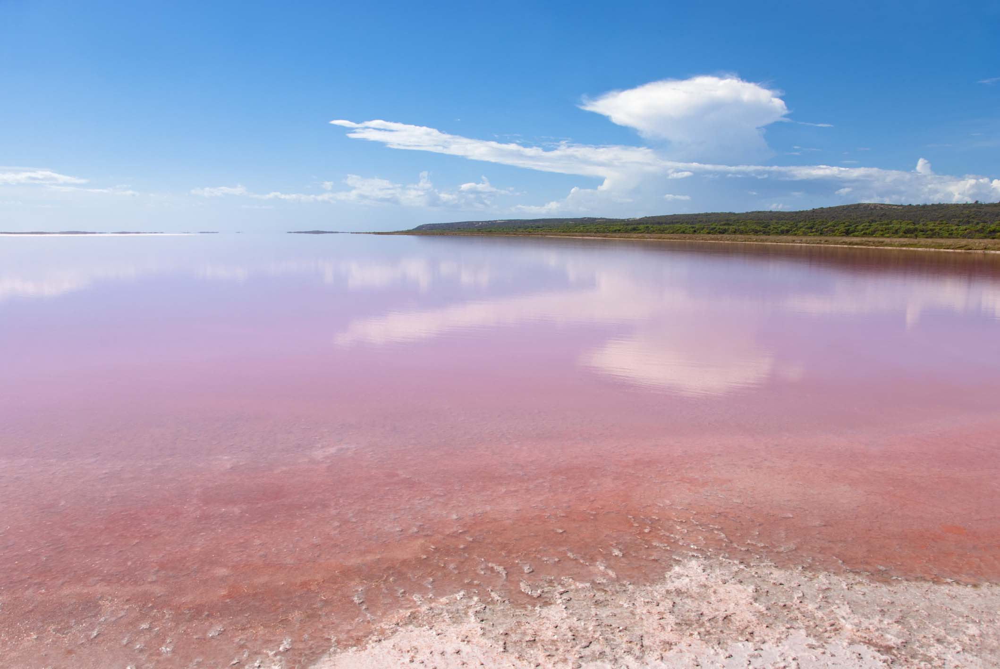
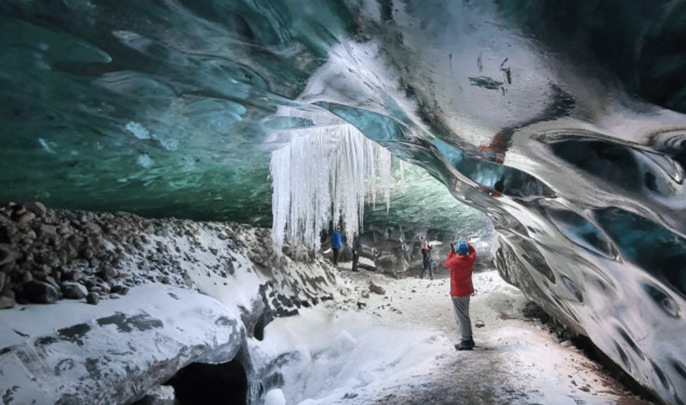
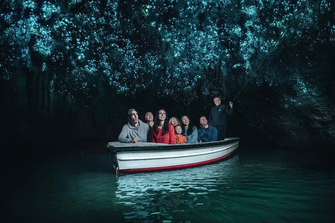

#1 PARQUE NACIONAL DE YELLOWSTONE
Según el Servicio de Parques Nacionales de EEUU, este anillo de colores vivos mide de 60 a 90 metros de diámetro y 36 de profundidad. Con estas dimensiones, no es extraño que sea tan popular entre fotógrafos y turistas por igual.
Leer más

#2 DEPRESIÓN DE DANAKIL, ETIOPÍA
Es uno de los lugares más inhóspitos y extraños de la Tierra. Conocida como la "puerta de entrada al infierno" según la BBC, es probablemente lo más cerca que jamás se podrá estar de pie sobre la superficie de Venus (sin la atmósfera aplastante, por supuesto).
Leer más

#3 EL GLACIAR TAYLOR, ANTÁRTIDA
Popularmente conocido como "glaciar sangrante", fue descubierto en 1911 por el geógrafo Griffith Taylor en la Antártida.
Leer más

#4 LAGO HILLIER, AUSTRALIA.
El Lago Hillier es un lago de color rosado en la isla Middle, la isla más grande del archipiélago Recherche, cerca de la costa de Esperance. Desde arriba, el lago se ve de un uniforme color rosa chicle. El lago mide unos 600 metros de largo y está rodeado de un borde de arena y un frondoso bosque de corteza de papel y árboles de eucalipto.
Leer más

#5 BLUE ICE CAVE, REYKJAVIK
Visita las poderosas cascadas de la costa sur de Islandia en un tour de 2 días desde Reikiavik. Pase la noche en un encantador hotel rural y tenga la oportunidad de explorar una de las cuevas de hielo estacionales.
Leer más

#6 LA CUEVA DE LAS LUCIÉRNAGAS, NUEVA ZELANDA
Venga a visitar una atracción en Nueva Zelanda que sin duda le deslumbrará durante este recorrido de 45 minutos guiado para grupos pequeños en barco por las famosas cuevas de luciérnagas de Waitomo.
Leer más